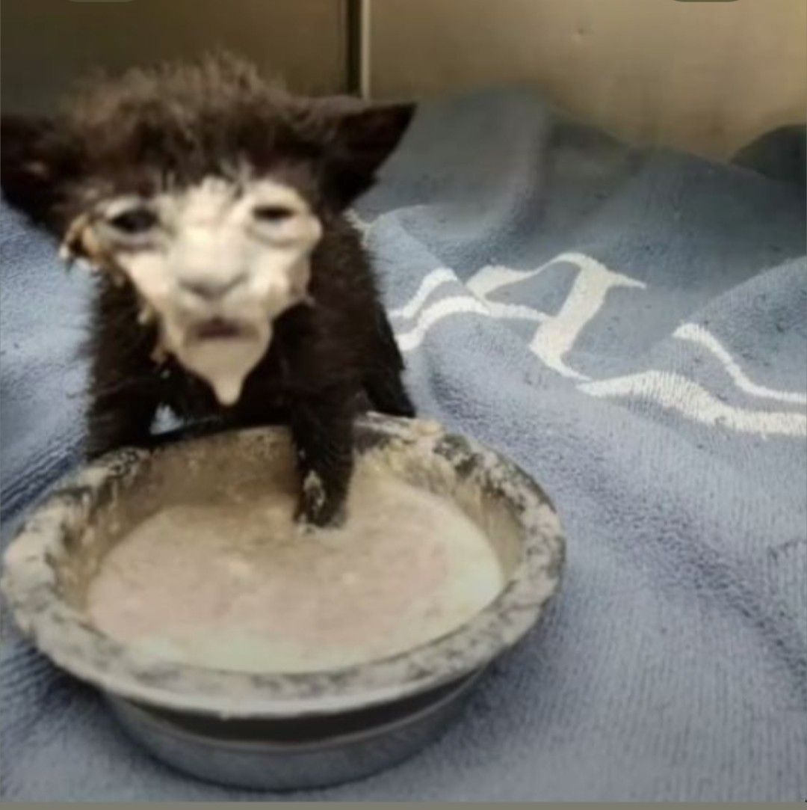

Клонирование статей с котами?!
Опубликовано
Это пост, являющийся шаблоном. (Смешной текст про котов)

Здесь пока нет статей, но вы можете это исправить!
Опубликовано
Это пост, являющийся шаблоном. (Смешной текст про котов)
